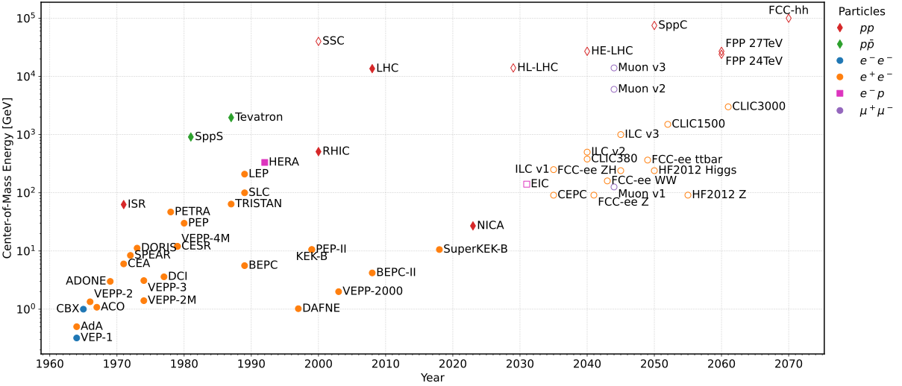
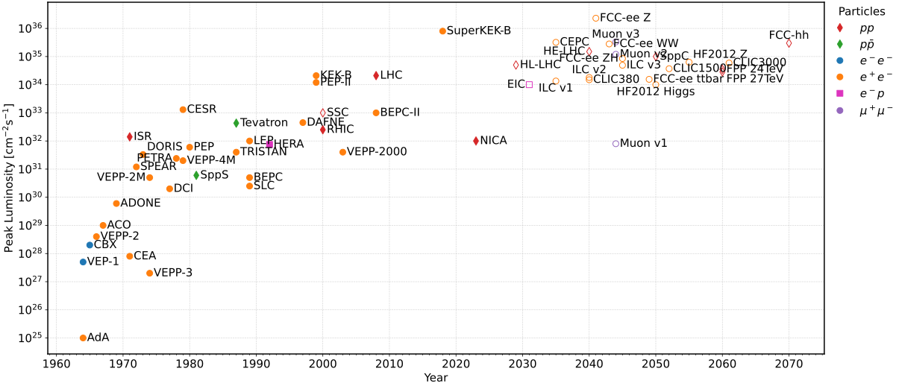

Note
Go to the end to download the full example code
Export Accelerator Timeline
This is an example script to generate static plots of the accelerator data via
matplotlib.
To run the script, make sure your environment has the requirements
of requirements_export_charts.txt installed.
- 
- 
import os
from pathlib import Path
import matplotlib as mpl
import matplotlib.ticker as plticker
import numpy as np
import pandas as pd
from matplotlib import pyplot as plt
from matplotlib.figure import Figure
from utilities.csv_reader import Column, import_collider_data
from utilities.plot_helper import (PARTICLE_TYPES, PLOTLY_MPL_SYMBOL_MAP, EnergyConfiguration,
LuminosityConfiguration, LuminosityOverEnergyConfiguration,
PlotConfiguration, assign_textposition)
from utilities.sphinx_helper import get_gallery_dir, is_sphinx_build
def plot(data: pd.DataFrame, configuration: PlotConfiguration) -> Figure:
"""Generate interactive plots with matplotlib, based on the given configuration,
which defines the columns to use, labels and the text positions.
Args:
data (pd.DataFrame): DataFrame containing the (modified) accelerator timeline data
configuration (PlotConfiguration): See :class:`utilities.plot_helper.PlotConfiguration`
Returns:
Figure: Matplotlib figure
"""
fig, ax = plt.subplots()
pad = mpl.rcParams["lines.markersize"]/3
vmap = {"top": pad, "middle": 0, "bottom": -pad}
hmap = {"left": -pad*2, "center": 0, "right": pad*2}
alignment_map = {
"left": "right", "center": "center", "right": "left",
"top": "bottom", "middle": "center", "bottom": "top"
}
for particle_type in PARTICLE_TYPES:
mask = data[Column.TYPE] == particle_type.shorthand
marker = PLOTLY_MPL_SYMBOL_MAP[particle_type.symbol]
for has_been_built in (True, False):
if has_been_built:
builtmask, fillstyle, legend_prefix = data[Column.BUILT], "full", ""
else:
builtmask, fillstyle, legend_prefix = ~data[Column.BUILT], "none", "_"
ax.plot(
data.loc[mask & builtmask, configuration.xcolumn],
data.loc[mask & builtmask, configuration.ycolumn],
linestyle="none",
marker=marker, fillstyle=fillstyle,
color=particle_type.color,
label=f"{legend_prefix}{particle_type.latex}",
)
for x, y, text, textposition in zip(data.loc[mask, configuration.xcolumn],
data.loc[mask, configuration.ycolumn],
data.loc[mask, Column.NAME],
data.loc[mask, configuration.textposition]):
v, h = textposition.split(" ")
ax.annotate(text, xy=(x, y),
xytext=(hmap[h], vmap[v]),
textcoords="offset pixels",
ha=alignment_map[h], va=alignment_map[v]
)
ax.set_xlabel(configuration.xlabel)
ax.set_ylabel(configuration.ylabel)
for axis in ("x", "y"):
if axis in configuration.logscale:
getattr(ax, f"set_{axis}scale")("log")
lim = getattr(ax, f"get_{axis}lim")()
numticks = int(np.log10(lim[1]/lim[0])) + 1
getattr(ax, f"{axis}axis").set_major_locator(plticker.LogLocator(base=10.0, numticks=numticks))
getattr(ax, f"{axis}axis").set_minor_locator(plticker.LogLocator(base=10.0, subs=np.arange(2, 10)))
getattr(ax, f"{axis}axis").set_minor_formatter(plticker.NullFormatter())
else:
getattr(ax, f"set_{axis}scale")("linear")
getattr(ax, f"{axis}axis").set_major_locator(plticker.MultipleLocator(base=10.0))
getattr(ax, f"{axis}axis").set_minor_locator(plticker.MultipleLocator(base=1.0))
ax.legend(loc='upper left', bbox_to_anchor=(1, 1), borderaxespad=0., title='Particles', ncol=1)
return fig
if __name__ == "__main__":
if is_sphinx_build():
MAIN_DIR = Path()
output_dir = get_gallery_dir()
else:
MAIN_DIR = Path(__file__).parent
output_dir = MAIN_DIR / "images"
plt.style.use(MAIN_DIR / "utilities" / "chart.mplstyle")
data = import_collider_data()
data = assign_textposition(data)
fig_com = plot(data, EnergyConfiguration)
fig_com.savefig(output_dir / "energy.pdf")
fig_com.savefig(output_dir / "energy.png")
fig_lumi = plot(data, LuminosityConfiguration)
fig_lumi.savefig(output_dir / "luminosity.pdf")
fig_lumi.savefig(output_dir / "luminosity.png")
fig_lumi_vs_com = plot(data, LuminosityOverEnergyConfiguration)
fig_lumi_vs_com.savefig(output_dir / "luminosity-vs-energy.pdf")
fig_lumi_vs_com.savefig(output_dir / "luminosity-vs-energy.png")
# plt.show()
Total running time of the script: (0 minutes 8.818 seconds)